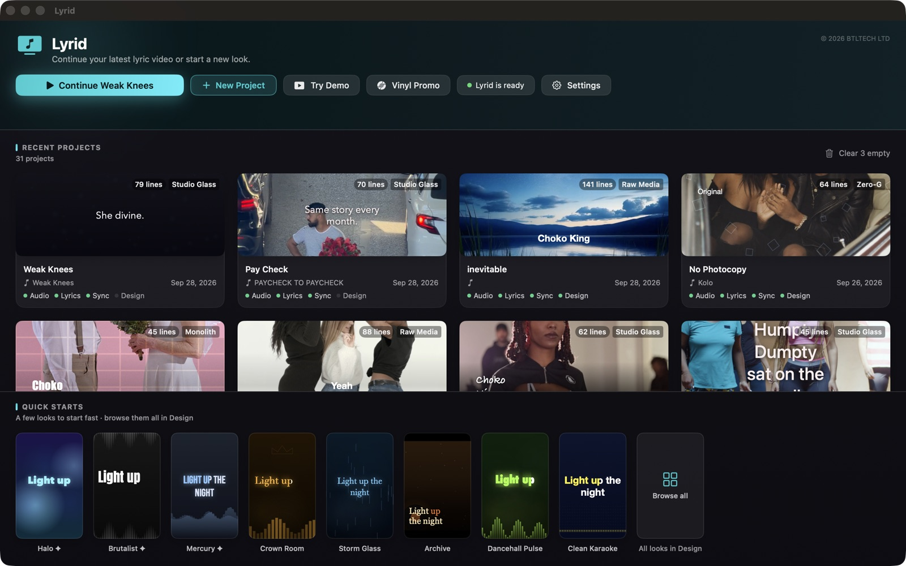
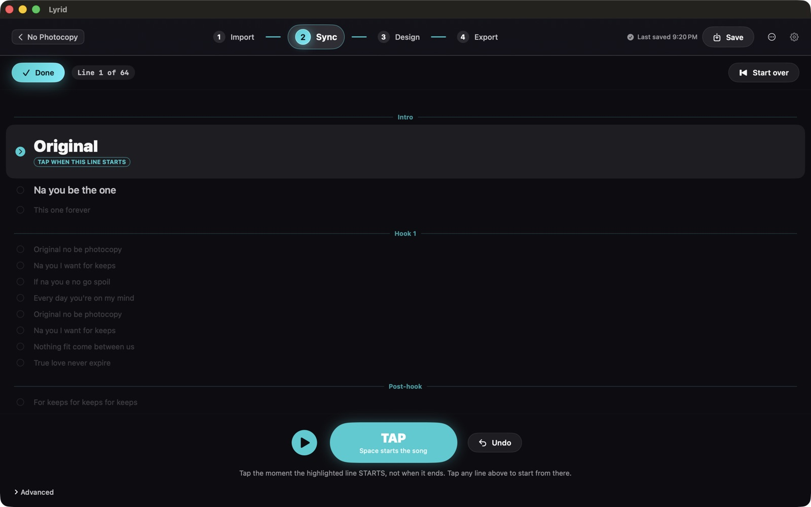
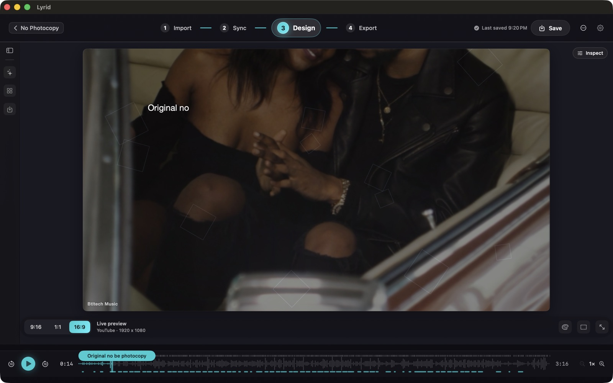

AI Lyric Video Generator · Mac
Turn any song into a ready-to-share lyric video
Add your track, paste your lyrics, choose a visual style, and Lyrid automatically aligns your lyrics to the performance. Fine-tune anything you want, then export polished videos for TikTok, Reels, Shorts, YouTube and Spotify Canvas.

Inside Lyrid
Import, Sync, Design, Export
Real projects, captured from Lyrid 1.2.1 on a Mac.




Finished Video Demo
See a finished video in action
Watch how aligned text, beat reactivity, and visual looks come together.
Workflow
From song to finished video in minutes
Everything you need to create polished lyric videos without complicated video editing.
1. Add your song and lyrics
Import your track and paste the exact lyrics you want displayed.
2. Sync and fine-tune
Lyrid automatically aligns your lyrics to the vocal and builds the timing for you. Fine-tune any line when needed.
3. Style and export
Choose a ready-made look, add your media, and export for every major social platform.
Features
Everything you need to ship a lyric video
From raw track to polished vertical clip in minutes.
Automatic lyric alignment
Lyrid separates the vocal, aligns your supplied lyrics with the performance, and builds word-level timing automatically. Fine-tune the result when needed.
Your lyrics, exactly as written
Lyrid preserves the wording, names, spelling, slang, and creative phrasing you provide while matching it to the performance.
Song Read — understand your arrangement
Analyse the structure of your track before you create. Song Read measures sections, energy, repetition, hook timing and loudness changes to help you understand how your arrangement develops. It describes measurable characteristics of the recording — it does not score musical quality or predict commercial success.
42 Looks & Raw Media
Choose from 42 Looks, use Raw Media for untouched footage, or start quickly with 8 curated shortcuts. Auto-Design, motion, glow and beat-reactive options give you plenty of room to make the result your own.
Social clips or full-length videos
Cut any hook into a vertical clip for Reels, TikTok and Shorts, with smooth audio fades. Or export the full song.
Multi-clip video & Lyrics Off
Import multiple video clips on a filmstrip with hard cuts, or turn lyrics off in Design → Background to export a plain music video.
Private by design
Audio processing stays on your Mac. Your music files are never uploaded for audio processing. Network access is only used for setup, licensing and optional services described in our Privacy Policy.
Formats for every major platform
Export in 9:16, 1:1, 16:9 or 4:5, in MP4 or MOV, with a one-click Publish Pack for multiple platforms.
Halo ✦ section motion
Halo ✦ follows your song's structure. Add [Verse] and [Hook] markers to your lyrics and it holds back through verses, then opens up on the chorus. Needs Smart motion above zero.
Beat-reactive glitch effects
Beat-gated RGB split, CRT scanlines and slice jitter that fire on the beat — not constantly. Includes the free Glitch Pop preset.
Brand Kits & custom styles
Manage custom styles in the Brand tab. Duplicate a project keeping its sync, restyle and re-export in minutes, or share looks as .lyridstyle files.
Pricing
One price. Yours to keep.
No subscription. A one-time licence with free updates across Lyrid 1.x.
Introductory price — rising to £29 soon. Lock in £24 today.
- Lifetime licence for Lyrid 1.x
- Activate on up to 2 of your Macs
- All 42 Looks, clips and export formats
- Free updates & fixes within 1.x
- Clean, watermark-free exports
FAQ
Lyrid questions answered
What is Lyrid?
Lyrid is a Mac app that automatically aligns your lyrics to the performance and builds polished lyric videos for social platforms.
Can I use my own spelling and custom lyrics?
Yes. Lyrid uses the exact lyrics you provide, preserving your wording, spelling, and phrasing. You can also generate an editable transcription draft when you do not already have the lyrics.
Do I need video-editing experience?
No. Lyrid aligns the lyrics for you and gives you 42 ready-made Looks — you pick a style and export.
Which platforms can I make videos for?
Export videos sized for TikTok, Instagram Reels, YouTube Shorts, YouTube and Spotify Canvas, with vertical, square, widescreen and portrait sizes.
Does my music get uploaded anywhere?
Audio processing stays on your Mac. Your music files are never uploaded for audio processing. Network access is only used for setup, licensing and optional services described in our Privacy Policy.
Does Lyrid work offline?
Audio processing stays on your Mac. Network access is only used for setup, licensing and optional services described in our Privacy Policy.
Is it a subscription?
No. Lyrid is a one-time purchase. Launch founders price is £24, with standard pricing at £29.
What do I need to run it?
An Apple Silicon Mac (M1, M2, M3, M4 or newer) running macOS 14 Sonoma or later.